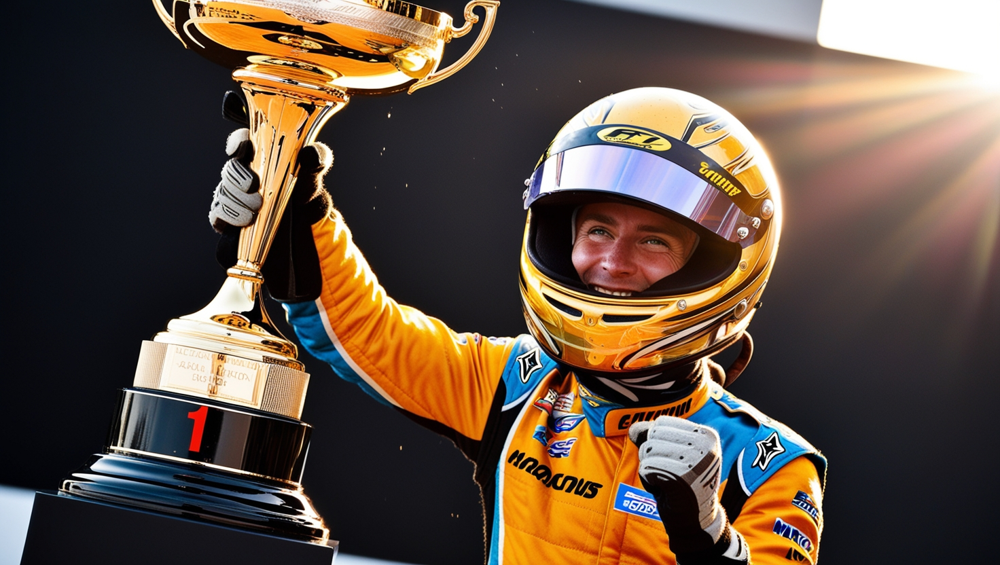

Você está se preparando para participar do Grande Torneio de Kart. O torneio consiste em várias pistas desafiadoras, cada uma com seus próprios obstáculos. Sua missão é coletar peças raras e vencer os desafios para se tornar o campeão.
Você inicia sua corrida na Pista de Areia, conhecida por suas curvas fechadas e trechos irregulares. Aqui você pode encontrar uma peça rara para melhorar seu kart.
A Pista de Neve é escorregadia e cheia de desafios. Você pode optar por procurar um atalho secreto ou focar em melhorar seu desempenho na pista.
Após procurar pela peça rara na Pista de Areia, você a encontra escondida em um depósito. Esta peça dará ao seu kart uma vantagem significativa nas próximas corridas.
Você decide concentrar-se na corrida e termina a prova com um bom desempenho. No entanto, a peça rara poderia ter oferecido uma vantagem extra.
Ao buscar o atalho secreto na Pista de Neve, você encontra uma rota mais rápida que economiza tempo, mas que é bastante traiçoeira.
Melhorar sua técnica de direção na Pista de Neve ajuda a manter o controle em condições escorregadias, mas o atalho secreto ainda pode ser uma opção valiosa.
Com a peça rara adquirida, você avança para a Pista de Corrida, onde enfrenta outros competidores em um circuito técnico. Sua nova peça faz uma grande diferença!
Você continua com o atalho secreto na Pista de Neve e consegue uma vantagem significativa, mas enfrenta desafios extras devido ao terreno traiçoeiro.
Depois de aprimorar sua técnica de direção, você tenta o atalho secreto e consegue uma grande vantagem, vencendo a corrida com eficiência.
Na Pista de Corrida, sua performance é impressionante. Graças à peça rara e à técnica refinada, você conquista a vitória no Grande Torneio de Kart!
Parabéns! Você é o campeão do torneio!
Mesmo com desafios extras, você consegue terminar a corrida. Sua estratégia foi boa, mas a vitória poderia ter sido mais certa com uma abordagem diferente.